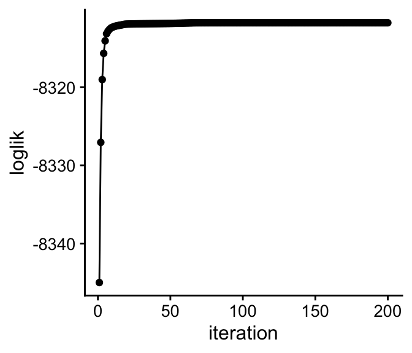

vignettes/relationship.Rmd
relationship.RmdThe ‘fastTopics’ package implements fast optimization algorithms for fitting topic models and non-negative matrix factorizations to count data. This document explains the close relationship between topic modeling and non-negative matrix factorization (NMF).
These are the packages used in the examples below:
In Poisson non-negative matrix factorization (Lee & Seung, 2001), counts \(x_{ij}\) in an \(n \times m\) matrix, \(X\), are modeled by the Poisson distribution: \[ x_{ij} \sim \mathrm{Poisson}(\lambda_{ij}). \] Each Poisson rate, \(\lambda_{ij}\), is a simple linear combination of parameters \(f_{jk} \geq 0, l_{ik} \geq 0\) to be fitted to the data: \[ \lambda_{ij} = \sum_{k=1}^K l_{ik} f_{jk}, \] in which \(K\) is a user-specified tuning parameter specifying the rank of the matrix factorization.
The ‘fastTopics’ function fit_poisson_nmf computes
maximum-likelihood estimates (MLEs) of the Poisson NMF parameters. These
parameters are stored as an \(m \times
K\) matrix \(F\), and an \(n \times K\) matrix \(L\). Drawing the connection to PCA, we call
\(L\) the “loadings matrix” (also
sometimes called the “activations”), and \(F\) is the “factors matrix” (or “basis
vectors”). Here we siulate a “toy” data set with \(n = 80\), \(m =
100\) and \(K = 3\):
set.seed(1)
dat <- simulate_count_data(80,100,3)
fit1 <- fit_poisson_nmf(dat$X,k = 3,numiter = 200,verbose = "none")
rbind(dim(dat$X),
dim(fit1$L),
dim(fit1$F))
# [,1] [,2]
# [1,] 80 100
# [2,] 80 3
# [3,] 100 3The fitting procedure finds an \(L\) and an \(F\) that maximize the likelihood (or, equivalently, that minimize the “deviance”):
quickplot(x = 1:200,y = fit1$progress$loglik,geom = c("point","line"),
xlab = "iteration",ylab = "loglik") + theme_cowplot(12)
Note that the MLE is not unique; if we multiply the \(k\)th column of \(F\) by some positive scalar, \(a_k\), and divide the corresponding column of \(L\) by the same \(a_k\), the likelihood will not change.
In the multinomial topic model (Hofmann, 1999; Blei et al, 2003), each sample, or row of \(X\), is drawn from a multinomial distribution: \[ x_{i1}, \ldots, x_{im} \,|\, t_i \sim \mathrm{Multinom}(t_i, \pi_i), \] Here. \(t_i = \sum_{j=1}^m x_{ij}\) is the total sample size for the \(i\)th row, and the multinomial probabilities are \[ \pi_{ij} = \sum_{k=1}^K l_{ik}^{\ast} f_{jk}^{\ast} \]
where \(l_{ik}^{\ast} \geq 0, f_{jk}^{\ast} \geq 0\). Note the similarity to the Poisson rates \(\lambda_{ij}\) above. There is, however, an important difference: the topic model parameters are additionally constrained so that each row of the loadings matrix, \(L^{\ast}\), and each column of factors matrix, \(F^{\ast}\), sums to 1: \[ \sum_{k=1}^K l_{ik}^{\ast} = 1, \qquad \sum_{j=1}^m f_{jk}^{\ast} = 1. \]
With these new constraints, the \(\pi_{ij}\)’s are guaranteed to be probabilities, and the factors and loadings have a simple interpretation: \(l_{ik}^{\ast}\) is the proportion that topic \(k\) contributes to the counts in sample \(i\); \(f_{jk}\) is the probability of item \(j\) occuring in topic \(k\).
Having fitted the Poisson NMF model, the multinomial topic model is easily recovered:
fit.multinom <- poisson2multinom(fit1)The rows of \(L\) and columns of \(F\) indeed sum to 1:
The multinomial topic model is in fact a reparameterization of the Poisson NMF model; in particular, the likelihood does not change with this reparameterization. We have the following result: \[ \mathrm{Multinom}(x_i; t_i, \pi_i) \times \mathrm{Poisson}(t_i; s_i) = \prod_{j=1}^m \mathrm{Poisson}(x_{ij}; \lambda_{ij}), \] in which the \(s_i\)’s are the “size factors”. We can check that this result holds in the toy data:
ll.pnmf <- loglik_poisson_nmf(dat$X,fit1)
ll.multinom <- loglik_multinom_topic_model(dat$X,fit.multinom) +
dpois(rowSums(dat$X),fit.multinom$s,log = TRUE)
quickplot(x = ll.pnmf,y = ll.multinom) + theme_cowplot(12)We can also easily go in the reverse direction, from multinomial
topic model fit to Poisson NMF fit. Here is an example, using the same
toy data set (the size factor estimates returned by
poisson2multinom were removed first to demonstrate that
they are not needed):
fit.multinom["s"] <- NULL
fit2 <- multinom2poisson(fit.multinom,dat$X)
loglik1 <- loglik_poisson_nmf(dat$X,fit1)
loglik2 <- loglik_poisson_nmf(dat$X,fit2)
quickplot(x = loglik1,y = loglik2) + theme_cowplot(12)From this plot, we see that the likelihoods for the original Poisson NMF fit, and the one recovered from the topic model, are exactly the same. (Note that the factors and loadings will not necessarily be the same—they will only the same up to a rescaling of the columns).
The reverse transformation from multinomial topic model back to
Poisson NMF is in fact very simple, involving only a simple
rescaling of the loadings by the total counts for each sample (the
function multinom2poisson is really only needed for
additional bookkeeping):
s <- rowSums(dat$X)
fit3 <- fit.multinom
fit3$L <- s * fit3$L
class(fit3) <- c("poisson_nmf_fit","list")
loglik3 <- loglik_poisson_nmf(dat$X,fit3)
quickplot(x = loglik1,y = loglik3) + theme_cowplot(12)The ‘fastTopics’ approach aims to combine the advantages of Poisson NMF and topic modeling.
The Poisson NMF is easier to fit because it doesn’t have the additional constraints.
On ther other hand, the parameters of the topic model are typically more useful for for understanding data; for example, the \(l_{ik}^{\ast}\)’s are topic proportions, which can be used to compare samples (documents), among other things.
So we provide a function to fit the Poisson NMF model
(fit_poisson_nmf), and another function to obtain the topic
model fit (poisson2multinom).